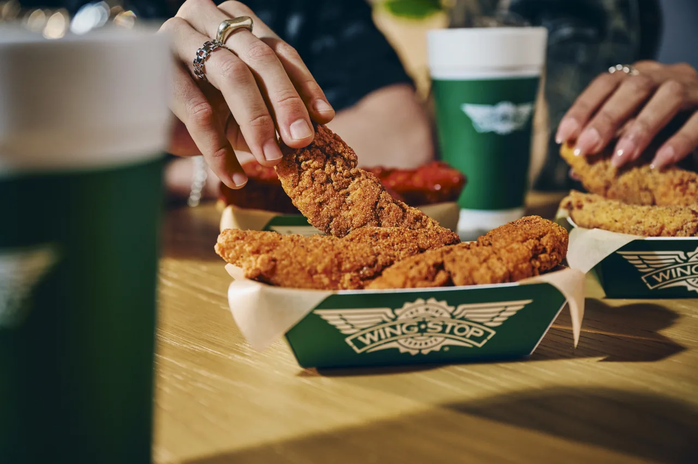

FIRST-TIMER GUIDE
What to Order at Wingstop: First-Visit Picks by Appetite

A well-planned first Wingstop order shows you more than one side of the menu without turning dinner into a heat challenge. Start with two contrasting flavors, choose classic or boneless deliberately, and add only the side and dip you will actually eat.
Wingstop Orders for One Person
For an average appetite, an 8-piece combo is a useful middle ground. Choose two flavors if the store permits: one safe, one adventurous. Lemon Pepper plus Original Hot is the classic introduction; Garlic Parmesan plus Mango Habanero creates a richer sweet-heat contrast. Choose six pieces if you want a lighter meal or ten if wings matter more than the side.
Wingstop Orders for Two People
Start by comparing a larger wing order with two separate combos. Two combos make sense when each person wants a drink and side. An à la carte or group order can be better when both people will share fries and dips. Select at least three flavor lanes: mild or savory, medium, and hot or sweet-hot. Such variety works better than several similar rubs.
Wingstop Family Order Planning
Use a large plain or mild portion as the base, then smaller containers of bolder flavors. Keep Atomic clearly separated. Mix classic and boneless only if your family actually prefers both; otherwise, extra variety can complicate the order without adding value. Add veggie sticks alongside fries and keep dips separate so children can control intensity.
Classic wings, boneless wings or tenders?
For exact format differences, continue to the Classic Wings Combo, Boneless Wings Combo or Crispy Tenders Combo guide.
- Classic: best for crisp skin, bone-in texture and dry rubs; official Wingstop pages say they are not breaded.
- Boneless: easy to share and consistently coated, but breaded and not gluten-free.
- Tenders: larger, predictable pieces that work well with dip and appeal to diners who do not want bones.
Food prepared in shared equipment can involve allergen cross-contact. Consult allergen information before treating any format as suitable for a medical diet.
Choose flavors by the experience you want
| You want… | Try… | Why |
|---|---|---|
| No heat | Garlic Parmesan or Plain | Rich or neutral without chile intensity |
| A bright dry flavor | Lemon Pepper | Citrus and pepper cut through fried richness |
| Classic wing-shop heat | Original Hot | Tangy, familiar and direct |
| Sweet heat | Mango Habanero | Fruit sweetness followed by chile warmth |
| Maximum heat | Atomic | Built for heat seekers, not cautious sampling |
For a deeper comparison, see the best Wingstop flavors ranked by style.
How to order for better value
Do not judge value from the headline price alone. Compare what you receive: wing count, included side, dip and drink. Pickup may cost less after delivery fees. A promotion is valuable only if it matches the size and format you wanted. Check the live cart and our deals guide before paying.
Three common mistakes
- Choosing only hot flavors: palate fatigue makes later wings less enjoyable. Add a dry or mild counterpoint.
- Ignoring dip nutrition: dips can materially change the meal totals. Use the calorie calculator and current official data.
- Ordering fries too early: they are at their best close to pickup, before trapped steam softens them.
How to read the menu before ordering
Start with format, not flavor. Decide whether you want classic wings, boneless wings, tenders or a sandwich. Then choose the count and only afterward select flavors, sides and dips. Following that sequence prevents a common problem: getting excited about several sauces and ending up with a larger, more expensive meal than you intended.
Look for what is included rather than assuming every listing is a combo. A wing-only item may not include fries, dip or a drink. Conversely, a bundle may include an item you would not buy separately. Local prices and promotions change, so the final cart is more useful than an old menu image found in search.
A first order for different taste preferences
If you dislike spicy food
Choose Garlic Parmesan, Lemon Pepper, Hawaiian, Hickory Smoked BBQ or Plain, depending on local availability. “No heat” does not mean “light”: Garlic Parmesan is rich, while BBQ and Hawaiian lean sweet. Pair a rich flavor with veggie sticks or regular fries rather than automatically adding loaded fries.
If you like medium heat
Original Hot is the clearest starting point because it delivers a recognizable hot-wing profile. Cajun combines peppery heat with savory seasoning. Split the order with a mild dry rub so every bite is not competing at the same intensity.
If you chase heat
Atomic is the obvious test, but make it part of the order rather than the whole order on a first visit. Heat can build over several pieces, and a flavor that is exciting for two wings may become exhausting by wing eight. Add ranch and veggie sticks, then keep a non-spicy flavor as a reset.
How to choose between a combo and a group pack
One combo is simple for one diner. Two combos are logical when two people want separate drinks and sides. Once three or more people are sharing, group packs deserve a comparison because individual drinks and repeated small fries may not be necessary. Our party-pack planning guide gives practical wing-count estimates.
Do the calculation with the items your group will actually consume. A pack is not automatically a bargain, and multiple combos are not automatically wasteful. Appetite determines the right structure alongside, delivery fees and whether everyone wants the same wing format.
Ordering takeout for the best texture
Select a pickup time you can meet. Arriving very late lets steam soften fried food; arriving too early may mean waiting while other items cool. Check the bag before leaving for dips, drinks and the correct number of flavor containers. Keep boxes level in the car and avoid placing cold drinks directly against hot food for a long drive.
At home, open the fry container if condensation is heavy and serve immediately. Do not shake flavor containers together in an attempt to remix them. Sauce distribution may improve, but different sections can blend and dry-rub coating can fall away.
Ordering delivery without paying for the wrong convenience
Compare Wingstop’s own channel with available delivery services, but look beyond the menu subtotal. Fees, marked-up item prices, minimums and promotions can change which option costs less. Confirm the address, selected store and estimated time. A closer restaurant can be better for texture even when another location shows a slightly lower food price.
Contactless delivery is convenient, but fried food should not sit outside. Follow the order status and bring it in promptly. If an item is missing, document the issue in the ordering channel rather than placing a duplicate order before support responds.
Build an order around nutrition priorities
If protein is the priority, compare the complete serving rather than assuming every wing format is equal. If carbohydrates or gluten are the concern, remember that boneless wings are breaded. If sodium matters, flavor, seasoning, fries and dips all contribute. Official data and stated serving sizes should drive the calculation.
One realistic approach is to keep the favorite wing flavor and simplify the rest: veggie sticks instead of loaded fries, water instead of a sugary drink, or less dip. A satisfying order is more sustainable than choosing a meal that meets a number but leaves you wanting a second dinner.
Useful substitutions when your first choice is unavailable
If Lemon Pepper is unavailable, Louisiana Rub offers another savory dry experience, though its seasoning is different. If Original Hot is missing, Cajun can provide comparable energy with a drier character. Hickory Smoked BBQ can replace a sweet mild choice, while Garlic Parmesan works for someone who wants richness without sweetness. Consider them directional alternatives rather than exact flavor copies.
Choose Your Wingstop Order in One Minute
First visit: classic wings, Lemon Pepper plus Original Hot, seasoned fries and ranch. Returning visit: Louisiana Rub plus Mango Habanero with Cajun Fried Corn. Heat lover: Original Hot plus a smaller Atomic portion, with veggie sticks and ranch. Editorial judgment informs these pairings; they are not official Wingstop recommendations, and local menus may differ.